Briefly
There are three fundamental ideas that make our code work:
- Homology of chain complexes of free 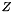 modules can be algorithmically computed by turning the differentials into matrices and then diagonalizing them (Smith Normal Form).
- Free Mackey functors are determined by their bottom level groups. The higher levels are obtained by taking fixed points, and this can be done algorithmically on our matrices as long as equivariant bases are used (this is an ordered basis in which elements in the same orbit are written consecutively).
- Box products of Mackey functors are tensor products on the bottom level. This is not true for the higher levels, however using the bulletpoint above, higher levels are obtained by transferring. This is how box products of chain complexes of free Mackey functors are computed.
These three ideas dictate our approach: We work primarily on the bottom level, before transferring to get the higher ones. Homology is computed in each level separately and transfers/restrictions/Weyl group actions on the generators can be computed on the chains. But the chains are always free, so we can also algorithmically compute the effect of transfers/restrictions and Weyl group actions.
By converting all our differentials to matrices, using equivariant bases throughout, we can reduce our computations to pure linear algebra (over the integers), avoiding any symbolic math.
In more detail
Here's how the code works in more detail (for simplicity we specialize to the 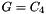 case, although everything works with different prime powers:
The additive structure
- The input are the bottom levels of the chains of the spheres 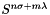 for 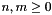. We could in fact do with only 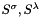, but this would result in taking arbitrarily many box products and destroy performance. Instead using the spheres for we only have to take triple box products at most, for some of the multiplicative structure.
- The data of a Chain complex are the ranks and differentials. The differentials are stored as matrices, but the ranks are stored as integer arrays and not integers. This is crucial as for example transfers completely differently from 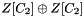 even though they both have rank 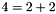 over . With our conventions, has rank 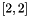 while has rank 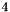.
- We transfer both ranks and differentials to higher levels. While transferring ranks is straightforward, transferring differentials is quite a bit more complicated and requires to have already transferred the ranks of the domain and range of the differentials.
- Using the familiar homology algorithm we compute the groups of the Mackey functor at every level. We also compute their generators (as elements in the Chain complex)
- We transfer/restrict and compute the Weyl group action on the group generators. This concludes the Mackey functor computation for the , .
- To obtain the chains of the rest of the spheres, we box the Chains we already have. Boxing is more complicated compared to just taking tensor products, as we have to use equivariant bases throughout to transfer properly. However the most convenient bases for tensoring are not equivariant, and in the end we have to change bases through permutation matrices.
- We then perform the same procedure with transferring to get the entrire 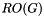 homology.
The multiplicative structure
Once we have the additive structure, we can work on multiplying the additive generators.
- First we restrict the generators to the bottom level.
- We then take the product of their restrictions as an element of the box product of chain complexes at bottom level.
- The product of restrictions is a restriction and as we are working with free Mackey functors, restriction is an injection. By inverting it we can get the product of generators at a higher level as element an of the box product.
- We finally take homology and write that product in terms of the generators.
Once we know how to multiply any two additive generators, we have in effect determined the multiplicative structure (see below for a catch).
Factorization
Even if we can multiply any two generators, that doesn't mean we can automatically write any element as a product of our preferred generators. If we know the expression then we can easily check it, however factorizing is a lot more complicated:
- First we form a multiplication table, where all generators (in a range of course) are multiplied with the "basic irreducibles". These can be the Euler and orientation classes.
- Once we have that we can draw a directed colored graph by connecting
 with 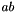 for
with 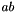 for  a basic irreducible; we color this edge red. If multiplication by b is an isomorphism i.e. 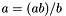 then we also connect with ; we color this edge blue.
a basic irreducible; we color this edge red. If multiplication by b is an isomorphism i.e. 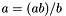 then we also connect with ; we color this edge blue.
- Since the product may not be a generator, but rather a multiple of it, we need to allow multiples of generators as distinct nodes. We never allow trivial (0) multiples of generators.
- To obtain a factorization, we simply need to connect 1 with any node in the graph. For the most efficient factorizations, we want to minimize the alternation of blue and red edges. This is done by a generalized Dikjstra algorithm.
- For the generators not connected to 1 (eg 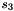) we perform the same process using different sources for our graph.
A caveat
Cyclic Generators
- The way we prove that say a transfer map is multiplication by 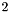, is by computing the generators at the domain and target, compute the transfer of the domain generator and compare with the target. Of course, there are usually multiple choices of generators, but up to isomorphism we get the same Mackey functor.
- There is a caveat however that appears when computing the multiplicative structure: If we prove that and 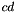 are both generators of the same cyclic group, then we can't conclude that they are equal. Eg if the group is 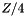 or then they differ by a sign. Still, since we are interested in generating the homology, as opposed to finding exact relations, we don't have to distinguish between cyclic generators and we don't need to stress over this detail.
- If we are interested in exact relations, then we can resolve the multiple generator ambiguity as follows: and are produced by tensoring different complexes, and if we have an explicit chain homotopy between them then we can compare directly. For example if they are obtained by tensoring and 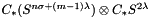 then we can compare them by using 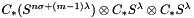 as a stepping stone.
- The problem with the above approach is that we need to take more and more box products, which is the most costly operation for runtime.
Non cyclic generators
- There is a situtation where this caveat cannot be sidestepped and that's when we have non cyclic groups. Here's an example where this problem comes up: If we have 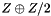 with generators 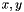 respectively then we can't automatically distinguish
 from 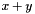 as there is an automorphism of exchanging them. In that case the difference between and generating the same group can be much more severe than multiplication with an integer coprime to the group's order (or a sign).
from 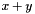 as there is an automorphism of exchanging them. In that case the difference between and generating the same group can be much more severe than multiplication with an integer coprime to the group's order (or a sign).
- One way out of this is to apply the approach for cyclic generators, breaking down our box products further, until they can be compared.
- Alternatively (and this is the approach we take in practice) is to ignore these products and make no statement as to the equality of and . This gives us less data to work with, but at least in the 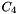 case this is enough to write the factorization of any element.
 1.8.13
1.8.13